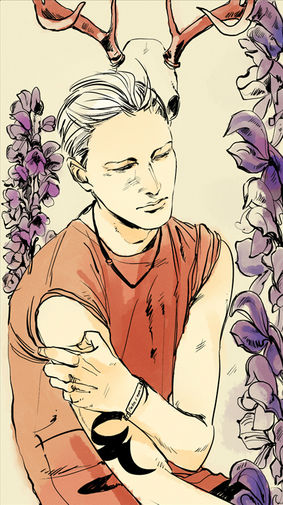

Себастьян Моргенштерн
Клэри... Ты не знаешь, можно ли простить меня. Небесный огонь сжигает все злое. Этот огонь горел в жилах Джейса, но Джейс выжил, потому что добр. А я насквозь прогнил. Во мне уже нечему выживать. Ты видишь призрак того, кем бы я мог быть, вот и всё.
 Себастьян Моргенштерн, урожденный Джонатан Кристофер Моргенштерн, был сыном Валентина Моргенштерна и Джослин Фрэй и старшим братом Клэри Фэирчайлд. В результате экспериментов, проведенных на ним его отцом, Себастьян был Сумеречным Охотником, рожденным с демонической кровью. После необходимости выдавать себя за Себастьяна Верлака в Аликанте, он позже решил оставить имя Себастьян, как символ неповиновения по отношению к обоим своим родителям.
Однако, незадолго до его смерти, он вновь принял свое имя Джонатан во время его последних моментов жизни без демонической крови в организме.
Характер и привычки
В результате экспериментов с кровью демона и жестокого воспитания Валентином, Себастьян вырос хладнокровным, бессердечным и кровожадным психопатом.
Он был мастером в манипуляции и лжи, прямо как и его отец. Он был натренирован стать эффективным шпионом, даже харизматичным и привлекательным, если того требовали обстоятельства, что он и делал когда был в обличье Себастьяна Верлака. Он был способен очень убедительно притворяться спокойным, наивным, готовым помочь, смешным и довольно хорошим мальчиком — черты, которым он научился в день встречи с настоящим Себастьяном, перед тем как убил его — чего никто не подозревал до тех пор, пока не стало слишком поздно. Несмотря на это, Себастьян был все еще просто жестоким, мстительным и высокомерным, не показывающим ни капли сочувствия к любому существу, исключая его сестру Клэри, и даже Валентина, несмотря на жестокость воспитания.
Как и Валентин, он был предан своей цели, мотивируемый чем-то большим, чем его эгоистичными желаниями. В его случае, мотивом был даже не весь мир или его правление — его основным мотивом было желание править миром со своими сестрой и "братом", и не остаться совсем одним в качестве правителя. Клэри заметила, что за всей этой бесконечной завесой зла он был чрезвычайно одиноким человеком, который желал компании и любви, но понятия не имел как заслужить эти вещи, не заставляя человека.
Oднако, все это было в основном из-за влияния демонической крови в его теле и последствий воспитания Валентином. Даже сам Себастьян рассматривал возможность вырасти совсем другим, если бы его воспитала Джослин, а не Валентин.
Тем не менее, после того, как небесный огонь выжег из него зло, "Джонатан" выразил сильные чувства сочувствия за свои ужасные деяния в качестве Себастьяна. С остатками сил, он сделал все что мог чтобы загладить свои поступки и спасти их от смерти от рук Темных. Несмотря на влияние крови Лилит над его разумом и поступками, Джонатан все равно чувствовал себя виноватым за весь ущерб от его поступков. Он выразил вину за все причиненные его сестре, и особенно матери, страдания, наконец признав Джослин как свою мать и попросив прощения за свои деяния. Несмотря на его смерть, он тем не менее почувствовал облегчение от освобождения от кошмара, который он был вынужден терпеть под влиянием демонической крови, перед смертью сказав, что никогда еще не чувствовал себя так легко.
Внешность
Себастьян был похож на своего отца, походя на молодую версию Валентина. Он был высоким и мускулистым и обладал стройным телосложением. У него было бледное, беспокойное лицо с высокими скулами. У Себастьяна были платиново-белые волосы, что придавало его бледной коже немного цвета, и очень темные черные глаза. Себастьян так же унаследовал худые, грациозные руки Джослин и ее длинные ресницы. Его голая спина была покрыта неровными шрамами из-за избиения демоническим металлическим кнутом при воспитании Валентином.
В то время, как он выдавал себя за Себастьяна Верлака, он покрасил свои волосы в черный, чтобы быть на него похожим, что по словам Клэри, не так ему шло, как его настоящий цвет волос.
Когда его пронзили Геосфоросом и небесный огонь полностью его прожег, кровь демона была вычищена из его организма, изменив его внешность и разум к тем, какие он бы имел, если бы не эксперименты Валентина: его черты стали мягче, на его лице больше не было его "злой ухмылки", и цвет его глаз изменился из черного в зеленый, такой же, как и у Джослин.